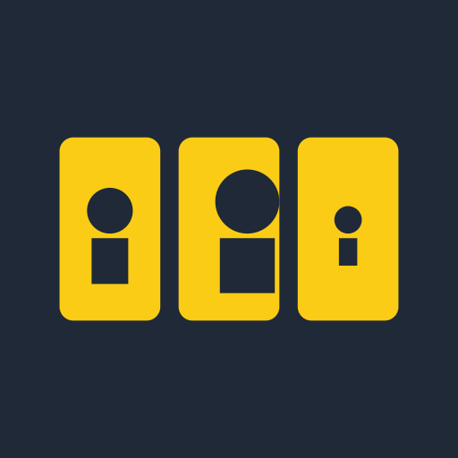

Shotwise
Plan every shot before you roll. Break your film into scenes and shots, add a sketch or reference frame to each, and on the day Shotwise gives you the order that needs the fewest camera setups.
Features
- Scenes and shots numbered like a slate (1A, 1B, 2A)
- Shot size, angle, movement, lens, dialogue and screen time in a few taps
- Storyboard view, with your own frames or an automatic framing guide
- Shoot day: shots grouped by location, lens and angle, with wides first and a time estimate
- Count takes, mark "Got it", flag reshoots, cut shots without losing them
- Share the shot list as text. PDF shot list and storyboard with Pro.
- Works offline. No account, no ads.
- Free: 1 film and up to 25 shots. Pro (A$12.99 once): unlimited films and shots, the PDF, and backup.